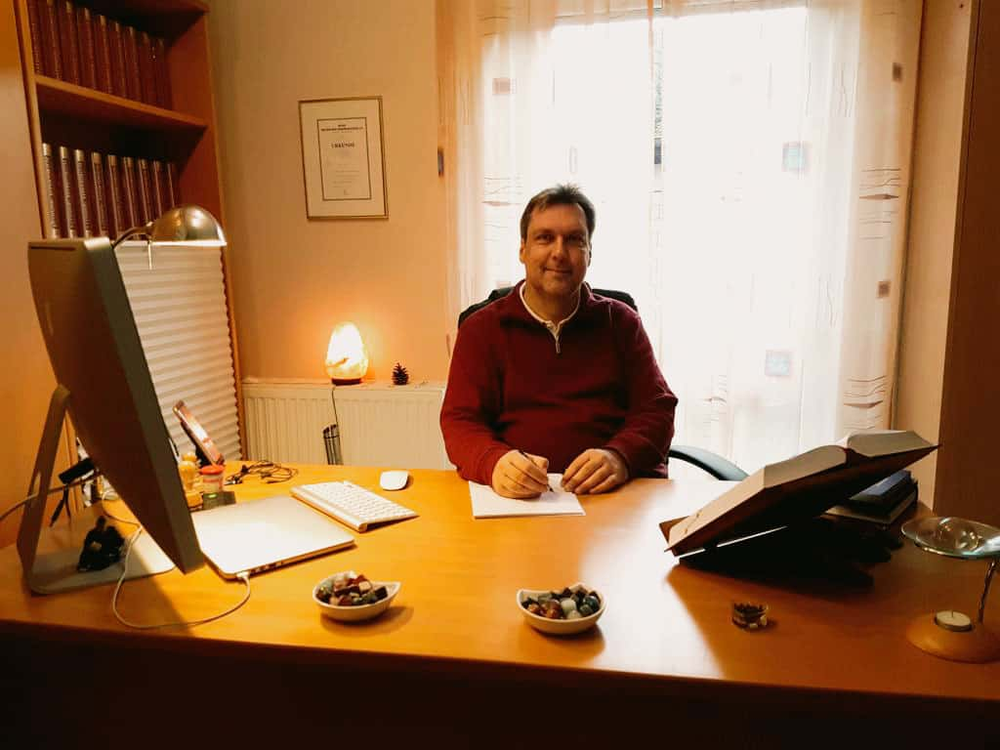
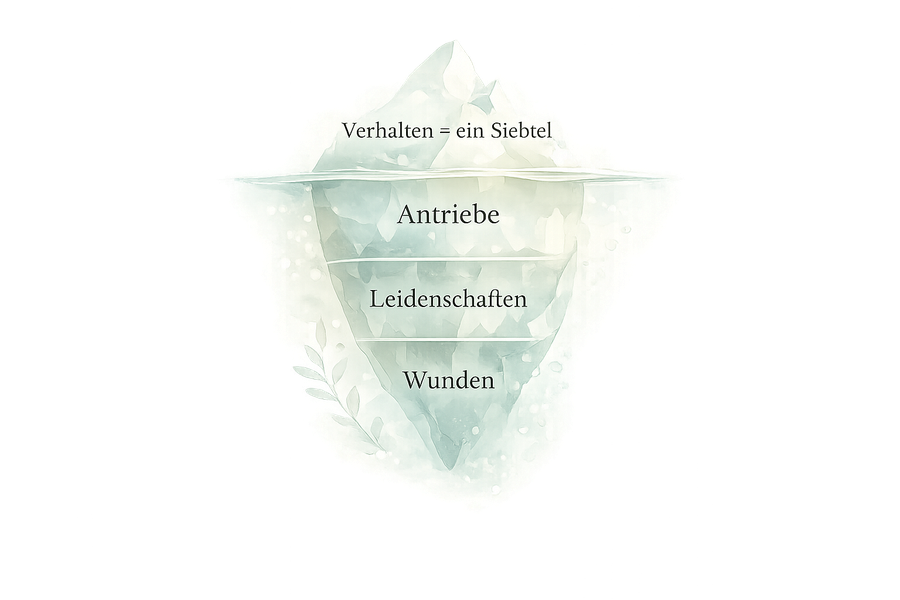

Über mich
Detlef Rathmer
Heilpraktiker, Homöopath, Enneagramm-Experte und Autor.
Seit mehr als fünfundzwanzig Jahren begleite ich Menschen auf ihrem Weg zu mehr Gesundheit, Klarheit und Selbstverständnis. Was mich von Anfang an angetrieben hat, ist eine einfache Überzeugung: Jeder Mensch ist einzigartig. Keine Beschwerde gleicht der anderen, kein Fall ist wie der vorige.
Deshalb nehme ich mir die Zeit, jeden Menschen wirklich kennenzulernen — nicht nur seine Symptome, sondern seine Geschichte, seine Muster, seine Tiefe.

Mein Weg
Vom Jurastudium zur Heilkunde
Nach einem erfolgreich abgeschlossenen Jurastudium entschied ich mich für einen anderen Weg — den der Heilkunde. Von 1998 bis 2000 absolvierte ich eine dreijährige Heilpraktikerausbildung sowie eine parallele Fachausbildung in Klassischer Homöopathie an der Hufeland-Schule im Naturheilzentrum Senden. Seit dem 17. Mai 2000 bin ich staatlich geprüfter Heilpraktiker und führe seitdem meine Naturheilpraxis in Billerbeck bei Münster.
Im Nachhinein erkenne ich: Das Jurastudium war kein Umweg — es war eine Vorbereitung. Ich habe es, meiner Natur entsprechend, konsequent zu Ende gebracht. Doch mit Mitte zwanzig, um die fünfundzwanzig, spürte ich, dass das Leben mich in eine andere Richtung zog. Es war mir offenbar nicht bestimmt, Jurist zu bleiben — ich musste mich neu orientieren, ich konnte gar nicht anders. Dass die juristische Denkweise mich dennoch nie losgelassen hat, zeigt sich bis heute: Seit über zwanzig Jahren bin ich Beisitzer bei der mündlichen Heilpraktikerüberprüfung am Gesundheitsamt Recklinghausen — eine Aufgabe, die mich immer wieder schmunzeln lässt, weil sie mich daran erinnert, dass dieser juristische Faden in meinem Leben offenbar seinen guten Grund hat.
Die juristische Denkweise, jeden Fall von allen Seiten zu beleuchten, alle verfügbaren Umstände zu gewichten und zu einer fundierten Gesamteinschätzung zu kommen, prägt bis heute meine Arbeit als Therapeut. Ein Patient ist für mich kein Symptomträger — sondern ein Krankheitsfall im tiefsten Sinne: ein gefallener Mensch, der wieder aufgerichtet werden möchte und zu Gesundheit geführt werden will. Und genau deshalb muss er umfassend wahrgenommen werden: seine Geschichte, seine Muster, seine Tiefe — ohne vorschnelle Schlüsse.
Dieselbe analytische Gründlichkeit bildete auch die Grundlage für meine Tätigkeit als Autor: Seit meinem 37. Lebensjahr schreibe ich Bücher — mittlerweile mehr als neunzig — zu den Themen Homöopathie, Enneagramm und persönliche Entwicklung.
Was begann als klassische Homöopathiepraxis, hat sich über die Jahre zu etwas Eigenem entwickelt. Seit 2002 arbeite ich nach der Sehgal-Methode, seit 2012 nach den Grundsätzen der Enneagramm-Homöopathie — einem Heilsystem, das ich als führender Therapeut weltweit in dieser Tiefe und Breite weiterentwickelt und angewendet habe.
Was meine Arbeit besonders macht
Das Enneagramm als diagnostische Lupe
Das Enneagramm ist für mich keine Theorie — es ist eine diagnostische Lupe. Es erlaubt mir, hinter das Verhalten zu schauen, auf die Ebene der inneren Antriebe, der Schutzstrategien und der grundlegenden Wunden, die jeder Mensch in sich trägt. In Verbindung mit der Homöopathie, den Bachblüten und den Schüßler-Salzen entsteht daraus ein ganzheitliches Heilsystem, das auf den ganzen Menschen ausgerichtet ist — nicht nur auf seine Symptome.
Die Enneagramm-Homöopathie wurde von Dr. med. Peter Hegemann (1953–2017) aus Speyer begründet, der als erster Homöopath bestimmten Enneagrammtypen spezifische homöopathische Mittel zugeordnet hat. Nach seinem Tod im April 2017 habe ich dieses Werk aufgenommen, grundlegend erweitert — insbesondere um die 27 Subtypen des Enneagramms — und daraus ein eigenständiges, umfassendes Heilsystem entwickelt, das in dieser Tiefe weltweit einzigartig ist.
Nach mehr als sechs Jahren intensiver Arbeit veröffentlichte ich 2011 „Rathmer’s Repertorium“ — das weltweit umfangreichste Nachschlagewerk für Geist- und Gemütssymptome in der Homöopathie, das seit 2017 auch im weltweit führenden homöopathischen Computerprogramm RADAR Opus integriert ist. Seither sind zahlreiche weitere Bücher zu den Themen Homöopathie, Enneagramm und persönliche Entwicklung entstanden.

Was Sie bei mir erwartet
Keine Standardlösungen. Keine Schubladen.
Keine voreiligen Schlüsse. Stattdessen: echtes Zuhören, tiefes Verstehen und eine Behandlung, die so individuell ist wie Sie selbst.
Ich nehme mir die Zeit, die es braucht — für eine gründliche Erstanamnese, für eine präzise Typbestimmung, für ein Gespräch, das wirklich in die Tiefe geht. Meine mehr als fünfundzwanzigjährige Erfahrung als Therapeut fließt in jede Sitzung ein — genauso wie meine Arbeit als Autor, Dozent und Forscher auf dem Gebiet der psychologischen Homöopathie.
Kurzübersicht
Werdegang auf einen Blick
- Staatlich geprüfter Heilpraktiker seit 2000, Praxis in Billerbeck seit 2000
- Fachrichtung: Klassische Homöopathie, Enneagramm-Homöopathie, Sehgal-Methode
- Autor von mehr als neunzig Büchern zu Homöopathie und Enneagramm
- Führender Vertreter und Weiterentwickler der Enneagramm-Homöopathie weltweit
- Schulleiter der Schule für Psychologische Homöopathie
- Beisitzer der Prüfungskommission für Heilpraktiker beim Gesundheitsamt Recklinghausen — seit über zwanzig Jahren
- Mehr als dreißig Jahre Dozententätigkeit

Bücher & Veröffentlichungen
Über 90 Bücher zu Homöopathie und Enneagramm
Neben meiner Praxistätigkeit bin ich als Autor und Verleger aktiv. In mehr als neunzig Büchern habe ich mein Wissen über klassische Homöopathie, Enneagramm und persönliche Entwicklung zugänglich gemacht — für Therapeuten, Therapeutinnen und interessierte Laien gleichermaßen.
Dazu gehört „Rathmer's Repertorium" — das weltweit umfangreichste Nachschlagewerk für Geist- und Gemütssymptome in der Homöopathie, das seit 2017 im führenden Computerprogramm RADAR Opus integriert ist — sowie zahlreiche Werke zur Enneagramm-Homöopathie, zu den 27 Subtypen und zur psychologischen Persönlichkeitsentwicklung.
Alle Bücher im Verlagshaus →Möchten Sie mich kennenlernen?
Das erste Gespräch ist kostenlos und unverbindlich — ich freue mich auf Sie.